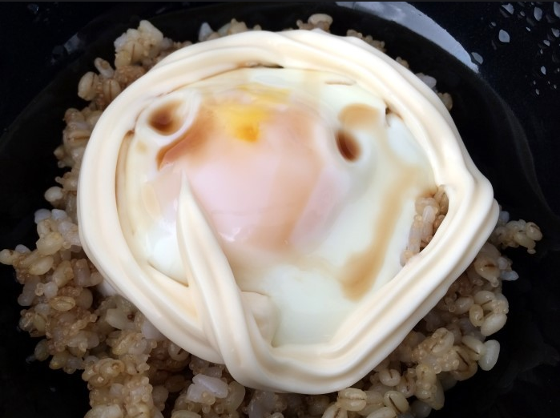

Egg, Mayo, and Soy Sauce over Rice

Description
Here's another simple dish. Beauty is that you are using pretty much the ingredients you used from the Korean dumpling soup recipe. Korean cuisine can be the same combinations of ingredients but with different cooking methods and ingredient scalings.
I make this recipe a lot and it's very quick and nutritious, too. It doesn't take much cooking time and prep time is almost non-existent.
Ingredients
serves one
- 2+ eggs or as many as you want
- a bowl of cooked rice (150 grams is a light serving)
- mayonnaise
- 1-2 tablespoons of soy sauce
- butter or oil to grease pan
- sesame seeds (optional)
- Korean gim (optional)
Steps
- First, steam some rice so you can cover it with some deliciousness that we are about to prepare.
- Grease a skillet with butter or oil to cook your eggs. I like to cook mine to over medium, but honestly, any degree to which you cook your eggs are fine, from sunny-side to over hard as long as it suits your palate. Once the eggs are to your liking, turn off the heat. If you leave your eggs on the skillet after you turn off the heat, the residual heat will continue to cook your eggs, so be mindful of that.
- Get your rice in a bowl. Top that rice with those eggs. Add in your soy sauce. Add in your mayonnaise. You can garnish with sesame seeds and gim for garnish and extra flavor.
- You can now dig in for a tasty meal.